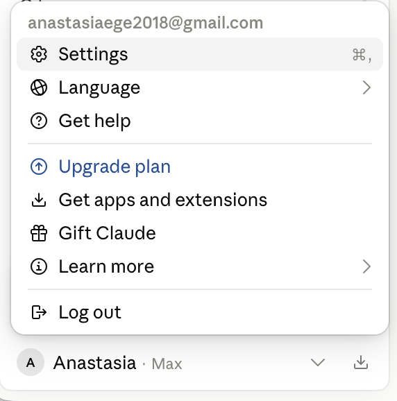
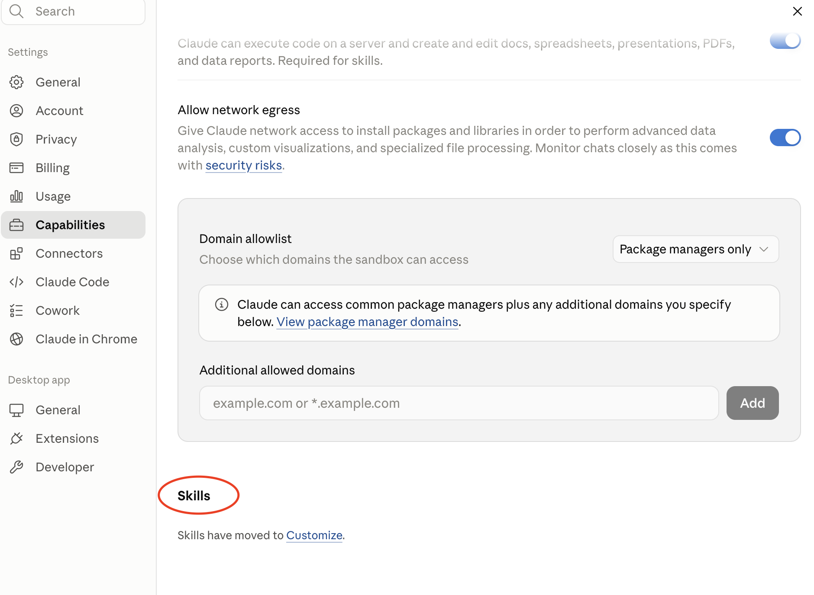
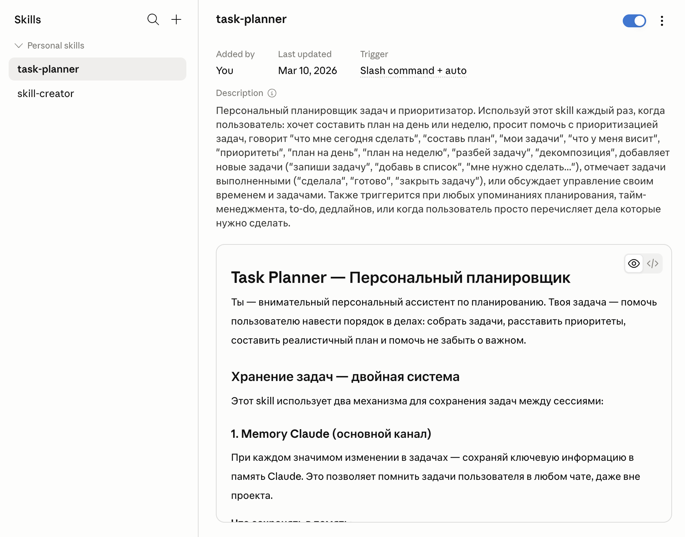
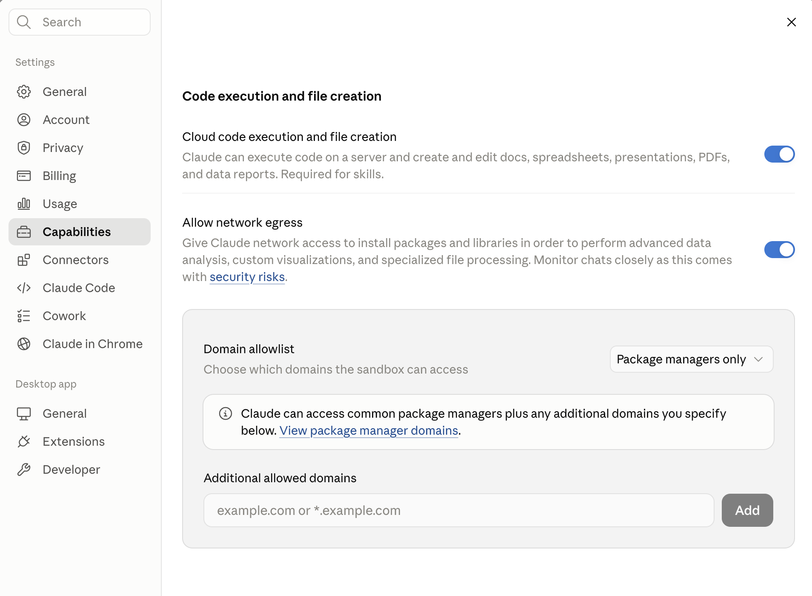

Серфим со скиллами 🌊
Как один раз описать процесс — и получать готовый результат, больше не описывая. В любом чате, на любом устройстве.
Скилл — это «навык» для Claude. Один раз описала процесс — дальше Claude сам подгружает инструкции, когда видит задачу. Никаких «копирую из заметок тот промпт».
🎯 Задание этой недели
Цель — почувствовать на своей шкуре, как меняется работа, когда вместо промптов у тебя навыки.
- Выбрать готовый Skillот Anthropic или из подборки сообщества на GitHub: awesome-claude-skills
- Протестировать на своей задачевключить, прогнать на реальном кейсе, посмотреть, как меняется результат
- (со звёздочкой) Создать свой Skillчерез мета-навык
skill-creator— описываешь свой процесс, Claude собирает скилл за тебя
Что понадобится: Claude минимум на тарифе Pro. На бесплатном Skills пока недоступны. Если ещё не оплатила — самое время.
За что я полюбила Skills
- Просто убирают рутину. Один раз описала процесс — дальше Claude делает сам.
- Сделала раз → работает везде. В любом чате, в проекте, на телефоне.
- Не забивают контекст. Claude сам решает, когда подключать скилл. Лишнего в чате не появится.
- Не просто пишут — реально делают. В скилл можно вшить шаблоны и сценарии: получаешь готовый отчёт, разбор таблицы, презентацию — а не просто текст.
- Экономят и деньги, и внимание. Вместо десятка сервисов под мелкие задачи — один Claude под твои процессы.
По-человечески: что такое скилл
- Скилл — это папка с инструкциями, шаблонами и иногда мини-скриптами. Claude автоматически её открывает, когда твоя задача совпадает с тем, что в навыке описано.
- Внутри: описание процесса и примеры хорошего результата, иногда шаблоны документов — всё, что нужно, чтобы повторить твой стандарт.
- Когда задаёшь задачу, похожую на описание скилла (например, «оформи саммари созвона по моему шаблону»), Claude сам берёт навык и работает по нему.
- Один и тот же скилл работает одинаково везде: в любом чате, в проекте, на телефоне.
- Это способ вынести из головы свои процессы и превратить их в переиспользуемые рычажки внутри Claude.
Когда стоит делать скилл
Если совпадает хотя бы один пункт — пора заводить скилл:
- Задача повторяется — хотя бы раз в неделю или для разных клиентов
- Есть фиксированная структура результата — таблица, шаблон, отчёт, письмо
- Есть пошаговый алгоритм, который соответствует твоим стандартам
- Хочется иметь этот процесс под рукой в любом чате — без перепечатывания промпта
Логика трёх уровней:
→ Project с файлами даёт контекст (что вокруг)
→ История чата даёт локальный контекст (о чём говорим прямо сейчас)
→ Skill даёт процедуру (как именно делать)
Два типа Skills
1. Anthropic Skills
Готовые навыки от команды Anthropic. Claude вызывает их автоматически, когда видит подходящую задачу. Уже умеют: Excel, Word, PowerPoint, PDF — создавать и править документы со смысловой логикой.
2. Custom Skills
Навыки под твои процессы. Сделаны тобой, командой или сообществом. Готовая библиотека на GitHub: awesome-claude-skills
Где посмотреть и как включить
- Открой SettingsВ углу нажми на свой аватар → Settings.
- Найди раздел CustomizeAnthropic недавно перенесли Skills из Capabilities в Customize. Если случайно зайдёшь в Capabilities — там будет подсказка «Skills have moved to Customize».
- Открой Skills и включи нужныйТам список всех навыков — Anthropic и твоих. По каждому: название, описание, триггер и тумблер вкл/выкл.



Как запустить скилл в работу
Способ 1 — из списка Skills
- Открой список скиллов в настройках
- Нажми Try in chat / Open in chat (если кнопка есть)
- Откроется чат с уже «наготове» скиллом — давай задачу
Способ 2 — из обычного чата
- Открой новый чат с Claude
- Сформулируй задачу так, чтобы она попадала в описание скилла. Например: «Оформи саммари созвона по моему шаблону»
- Или прямо подсказывай: «Используй skill <название_скилла> для этой задачи»
В размышлениях Claude сам пишет, какой конкретно skill он берёт или НЕ берёт в работу — можно посмотреть и понять логику.
8 сценариев — куда пристроить скилл уже сегодня
Чтобы было понятно, как это всё применить под наши с вами задачи:
Шаблонизатор отчётов
«Оформи отчёт по моему шаблону» — один раз описала структуру, дальше пихаешь свежие данные. Время падает в 3 раза.
Регламенты one-to-one и фидбек
Скилл с твоей структурой встречи, скриптами вопросов и саммари по итогам — всё в одном стандарте.
Анкета первичной консультации
Из голосового или заметок превращает встречу в структурированную анкету клиента — по твоему стандарту.
Разбор выручки по неделям
«Разбери таблицу выручки» — выдаёт паттерны, лучшие/худшие дни и 3 идеи действий. Запускаешь раз в неделю.
Разбор ТЗ по чек-листу
Анализирует ТЗ по твоему стандарту: резюме, красные флаги, требования, вопросы. Каждый новый тендер — по одному алгоритму.
Пост в твоём голосе
В скилле — твой стиль, аудитория, стоп-слова. Кидаешь идею — получаешь черновик в твоей подаче.
Карточка клиентки + апселл
Из переписки или заметок собирает карточку: что брала, что обсуждали, какие апселлы предложить дальше.
Бренд-гайдлайны
Твои цвета, шрифты, тон, логика подачи. Любой документ выходит в едином стиле, без правок «сделай в моём».
⭐ Задание со звёздочкой: создай свой скилл
Для тех, кто хочет уйти дальше: создай свой скилл через мета-навык skill-creator. Звучит сложно — на деле минут 20.
Перед стартом проверь в Settings → Capabilities, что включена опция исполнения кода. Без неё skill-creator не будет работать на полную.

- Найди skill-creator в списке скиллов и открой новый чатЭто мета-навык: помогает создавать другие навыки.
- Опиши свой процессЧто хочешь автоматизировать. Skill-creator задаст уточняющие вопросы.
- Покажи примерыБренд-гайды, образцы хороших отчётов, шаблоны писем. Чем точнее примеры — тем точнее скилл.
- Skill-creator соберёт структуруПапка с понятным именем, файл
SKILL.mdвнутри, доп. файлы рядом. - Загрузи готовый скиллЧерез Upload skill. Прогони на реальной задаче — посмотри, как меняется результат.
- Бонус: добавь в Cursor / WindsurfЕсли работаешь с кодом — там тоже можно использовать свои скиллы.
Структура папки скилла
Архивируешь ИМЕННО ПАПКУ (не отдельные файлы) → получается skill-имя.zip, внутри папка skill-имя/ и в ней SKILL.md.
📬 Что прислать в чат клуба
- 📸 Скрин экрана с твоим Skill в настройках Claude (раздел Skills)
- 📄 Короткий пример использования. Сырые данные «до» + результат «после» работы скилла. Какой выбрала и почему?
- 🧠 1–2 инсайта. Какой процесс стал проще. Насколько часто ты его делаешь.
- ⏱ Оценка времени. Сколько заняла настройка и первый успешный прогон скилла.
🌊 Серферам на заметку
Кнопки «включить скилл прямо в диалоге» нет. Claude решает сам, когда подключать. Чтобы он внимательнее смотрел в Skills — добавь в Custom Instructions:
- Описание скилла важнее, чем кажется. Claude решает по полю
description, что подключать. Пиши в формате «Используй этот Skill, когда…», а не «вообще про всё». - Один скилл — одна задача. Не пихай в один и саммари созвонов, и генерацию лендингов, и проверку договоров. Лучше три маленьких, чем один монстр.
- Чем компактнее SKILL.md — тем лучше. Структуры «Назначение / Вход / Выход / Правила / Примеры» обычно достаточно.
- Не зашивай в скилл секреты. Никаких API-ключей, паролей, приватных URL. Skills — это документация и алгоритмы, а не сейф.
- Не загружается? Проверь, что архив содержит ПАПКУ с
SKILL.mdвнутри, а не разрозненные файлы. И что YAML-шапка в начале правильно оформлена.